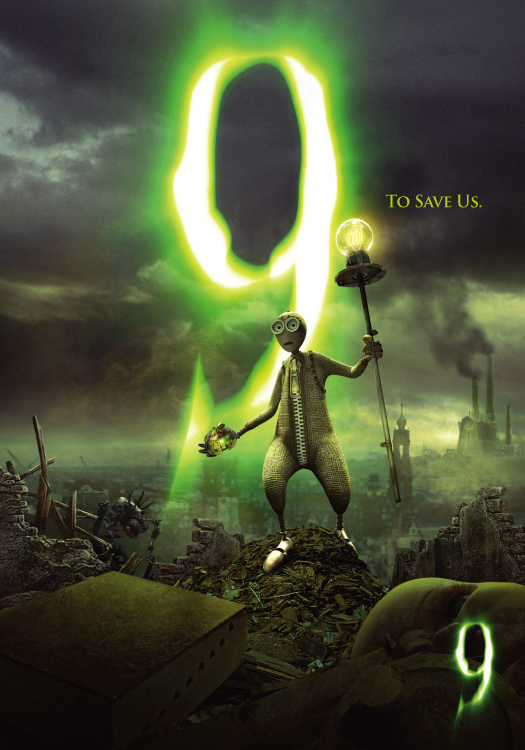
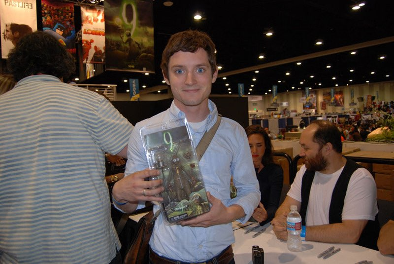

9, voiced by Elijah Wood, is the youngest of the bunch and we joke that he was "born yesterday." 9 has a cool signature design with a functional zipper down the front of his body.
He was originally created without a voicebox, but 2 found one for him. Despite his naivety and inexperience fighting, he is one of the bravest of the bunch.
9 stands up for the other characters and urgently tries to put clues of the past together. He is determined to find the answers to all of his questions (despite how "pointless" they may seem).
He feels like he is destined to find the answers about... pretty much everything! 9 shares a close bond with 5.
9 challenges 1's authority and cowardly tactics.

Elijah Wood holding a 9 figure at a convention.